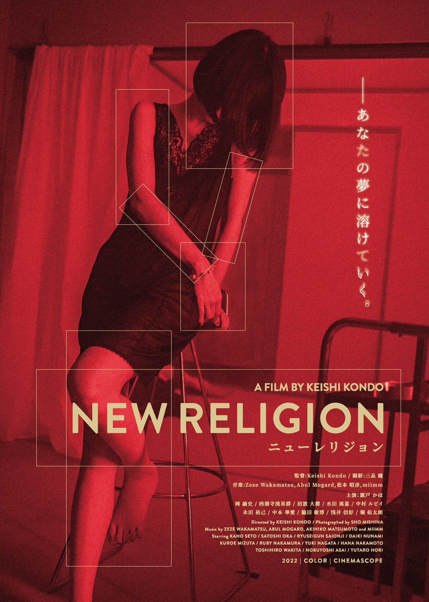

NEW RELIGION / KEISHI KONDO / 2022CRITIQUE16.07.26
La mémoire ne meurt jamais
New Religion explore le deuil, la mémoire et les corps qui refusent de laisser disparaître les morts.

NEW RELIGION / KEISHI KONDO / 2022New Religion explore le deuil, la mémoire et les corps qui refusent de laisser disparaître les morts.
Un premier film hypnotique où le deuil, le corps et les souvenirs refusent de disparaître.
Pourquoi certaines histoires nous accompagnent davantage lorsqu’elles refusent de vraiment se refermer.
La formule survit-elle encore à ses propres excès ?
Quarante-cinq ans après, Evil Dead ressemble toujours à un film qu’on n’aurait pas dû réussir à terminer.
Entrer dans les archives ↗Pas tout. Seulement ce qui mérite qu’on s’y arrête.